Tony Stark orchestrates a time heist to recover the Infinity Stones from across the timeline. After five years of retirement, raising his daughter Morgan, Tony solves time travel and leads the Avengers on their final mission. In the climactic battle, he seizes the Infinity Stones and snaps his fingers, destroying Thanos and his army — making the ultimate sacrifice to save the universe. "I am Iron Man."
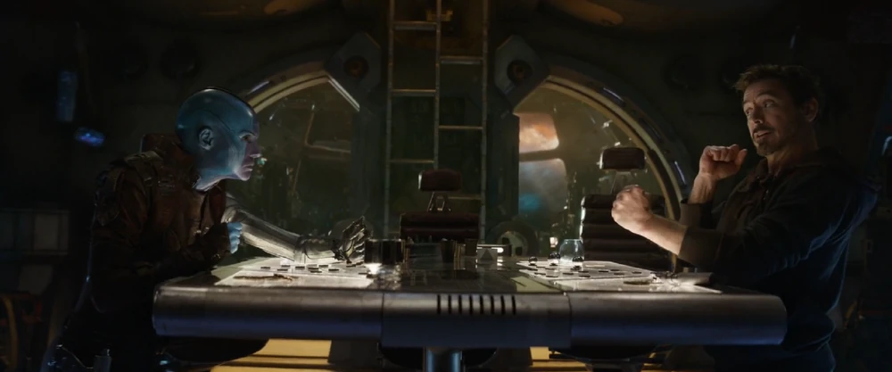
Playing Paper Football
Adrift in space, Tony Stark and Nebula pass the time by playing paper football on the Benatar, forming an unlikely bond of mutual survival.

Recording Farewell Message
Stranded with dwindling oxygen, Tony records a heartbreaking farewell message to Pepper Potts on his damaged Iron Man helmet.
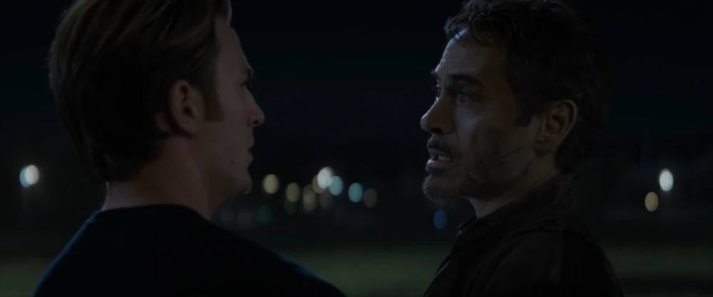
Reunion with Steve
Rescued by Captain Marvel, Tony returns to Earth. Emaciated and weak, he reunites with Steve Rogers, expressing his deep grief: "I lost the kid."

Tony & Morgan at the Cabin
Five years after the Snap, Tony Stark has retired to a quiet lakeside cabin with Pepper, raising their beloved daughter Morgan.

Gathering at the Cabin
Steve, Natasha, and Scott Lang visit the cabin, pitching the concept of a time heist. Tony initially refuses, unwilling to risk the peaceful life he has built.

Holographic Möbius Strip
Tony models a quantum navigation system, discovering that a holographic inverted Möbius strip model provides a stable timeline route.
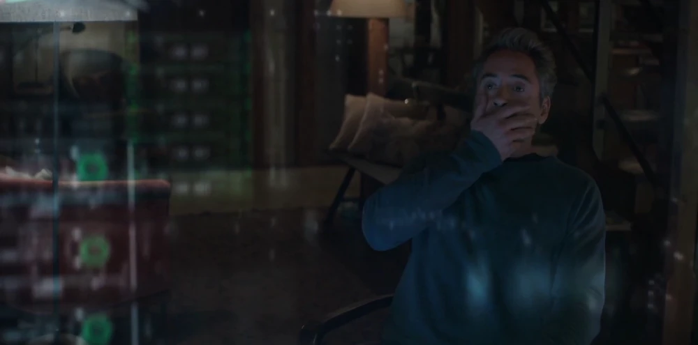
Solving Time Travel
Late at night in his kitchen, Tony successfully runs the simulation, solving the physics of quantum time travel. "Shit!" he exclaims in disbelief.
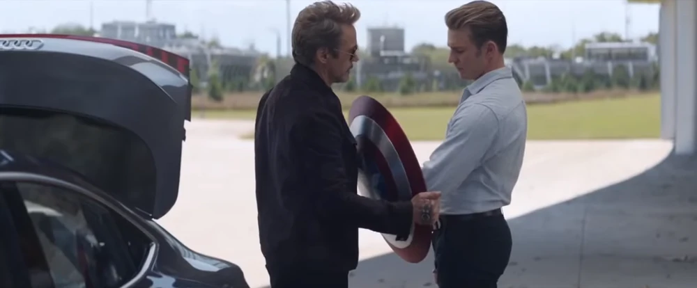
Returning Cap's Shield
Tony Stark arrives at the Avengers Compound, returning the iconic vibranium shield to Steve Rogers as they fully reconcile.
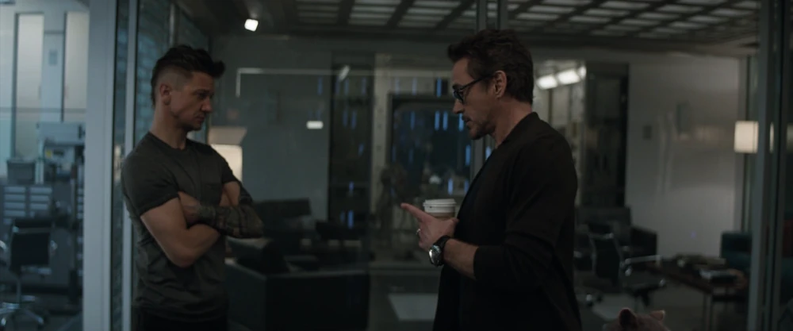
Preparing for the Heist
The team gathers at the compound, setting up the quantum platform and reviewing their timeline target points for the heist.
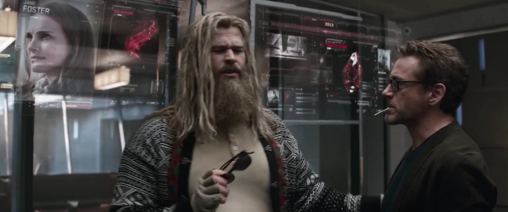
Quantum Brainstorming
Tony, Bruce, Rocket, and Nebula brainstorm the mechanics of the heist, tracing the exact coordinates of the Infinity Stones in the past.

Avengers Suit Up in Quantum Gear
The assembled Avengers walk out together, suited up in their red-and-white Quantum Suits, ready to step onto the time travel platform.
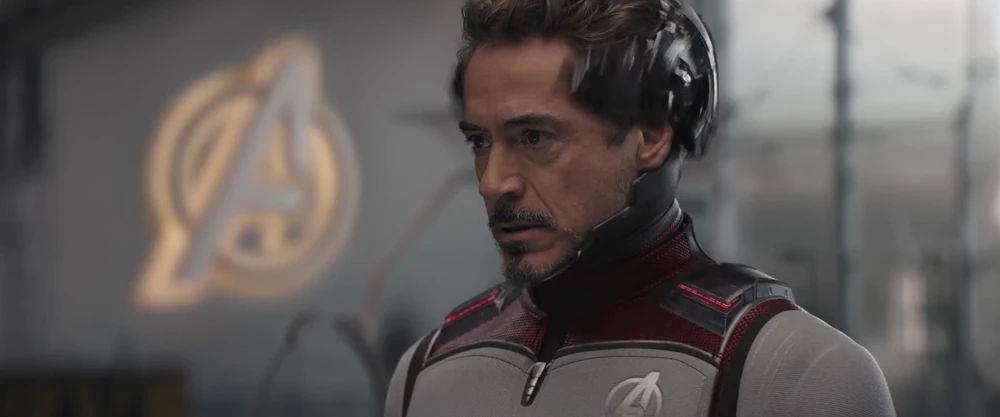
Tony Prepared for the Jump
Tony Stark adjustments his Quantum Suit, preparing to jump back to the Battle of New York in 2012 to retrieve the Tesseract.

1970 Camp Lehigh
When the 2012 plan goes wrong, Tony and Steve make an emergency jump to 1970 Camp Lehigh to retrieve the Tesseract and Pym particles.
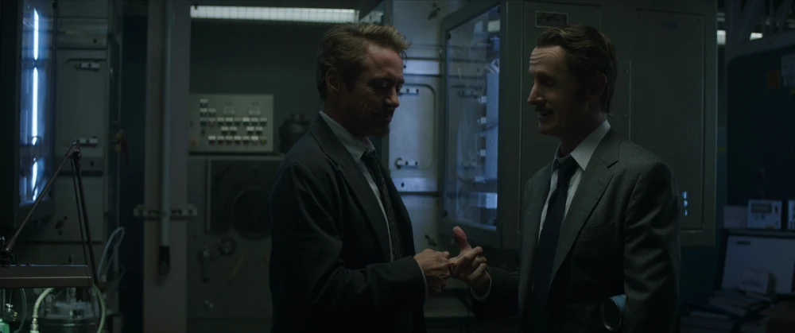
Meeting Howard Stark
In 1970, Tony meets his father Howard Stark, sharing a poignant conversation about fatherhood and legacy that grants him deep personal closure.
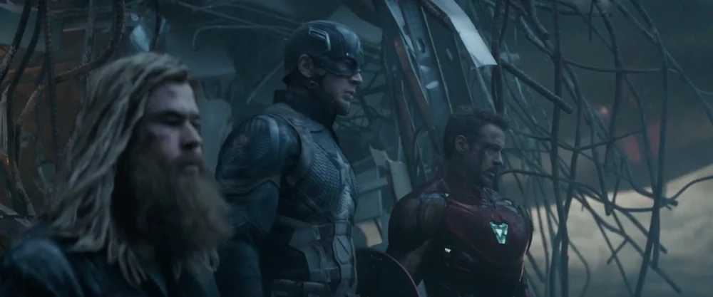
Tony & Steve in the Past
Tony and Steve successfully complete their mission in 1970, returning back to the present with the Tesseract and Pym particles.

Peter Parker Battlefield Hug
During the final battle, a resurrected Peter Parker meets Tony on the field. An emotional Tony pulls a rambling Peter into a tight, relieved hug.
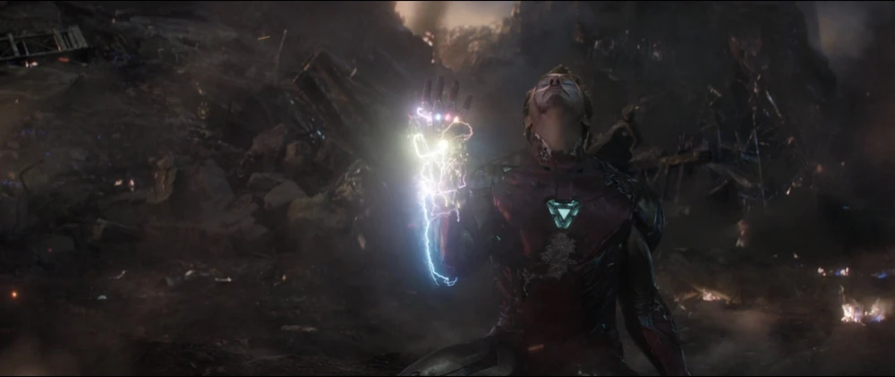
Nano-Gauntlet Stones Charge
Tony Stark uses his nanotechnology to swipe the Infinity Stones from Thanos's gauntlet. The stones surge with immense energy through his suit.
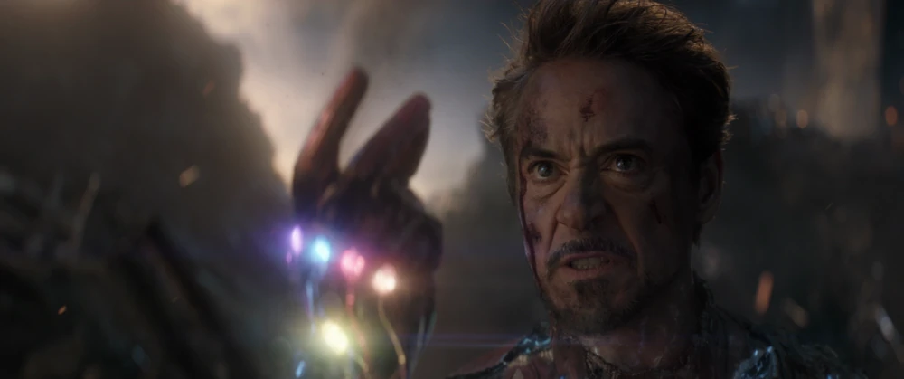
"I Am Iron Man" Snap
Confronting Thanos, Tony Stark delivers his iconic final line, "And I... am... Iron Man," and snaps his fingers, turning Thanos and his army to dust.
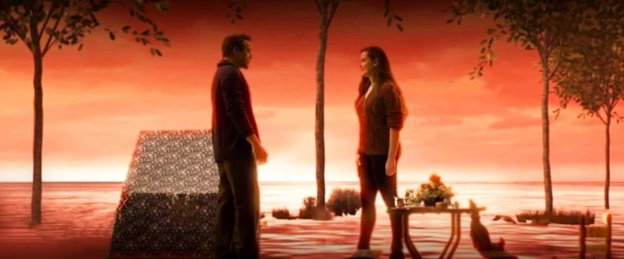
Soulworld Deleted Scene
In a deleted sequence, Tony meets a teenage Morgan Stark in the dreamlike Soulworld after his snap, receiving reassurance of her love.
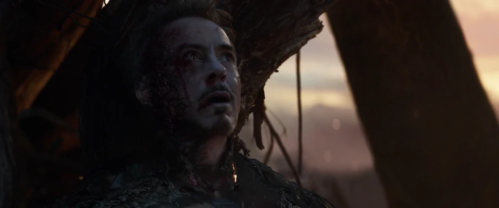
Dying Tony Stark
Pepper Potts and Peter Parker comfort Tony as the fatal radiation from the stones ravages his body. Pepper whispers, "You can rest now."
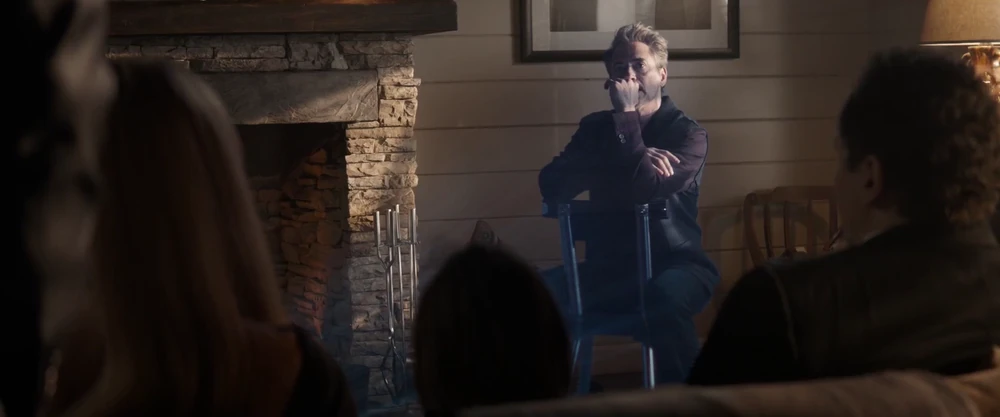
Holographic Funeral Message
Tony's pre-recorded holographic farewell message is played at his funeral service. He tells Morgan he loves her "3000" as the Arc Reactor floats on the lake — proof that Tony Stark has a heart.